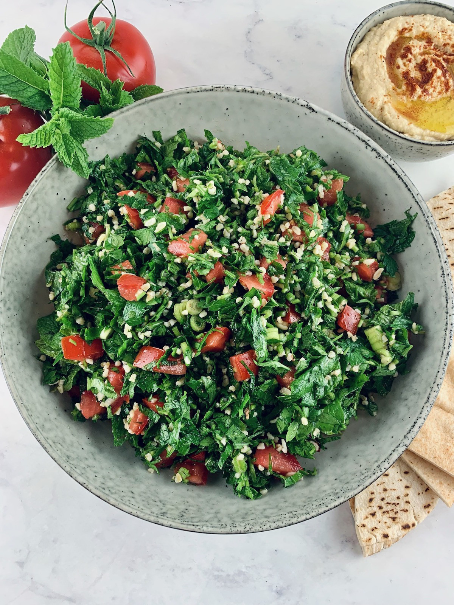

Tabbouleh Salad
Tabbouleh salad - Doesn't that look delicious?
Description
Traditional Lebanese Tabbouleh is a shining example of how simple ingredients can make for a complex and delicious dish. It is a lemony herb salad with some bulgur and not a bulgur salad with a few herbs thrown in the parsley is the star of the show here!
Ingredients
- Parsley
- Mint
- Green onion
- Tomato
- Bulgur
- Extra virgin olive oil
- Freshly squeezed olive oil
Steps
- Place a quarter of a cup of bulgur in a bowl and season with some salt & black pepper. Add half a cup of boiling water; Then cover it with a plate and let it stand for ten minutes.
- Wash all the herbs and green onions and dry them.
- Cut off the parsley stems and finely chop the leaves with a sharp knife
- Trim the green onions, and slice them thinly.
- Wash and trim the tomatoes, and dice them with a serrated knife so that you don't squish them. Keep the juices and add them with the tomatoes to your bowl.
- Now, fluff the prepared bulgur with a fork.
- Add the bulgur to the bowl prepared ingreedients along with the lemon juice and olive oil. Season with salt and pepper, then mix the salad well to combine.
- Serve and enjoy!